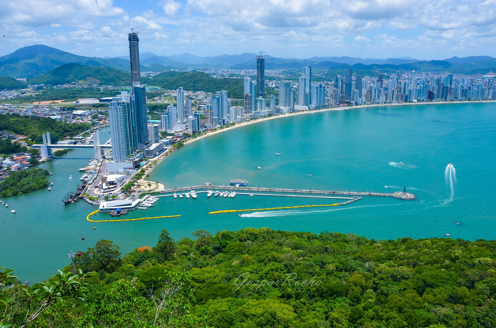
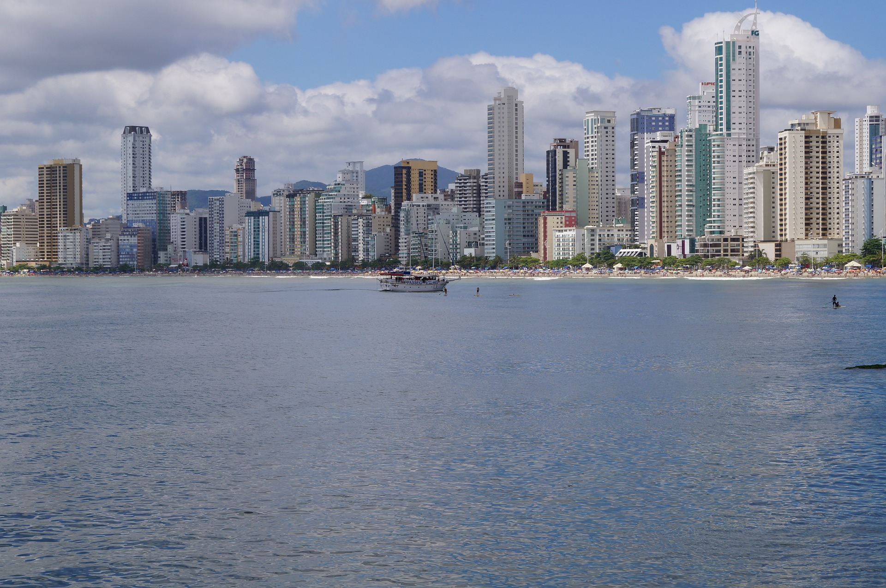

PRAIA DE BALNEÁRIO CAMBORIÚ
Santa catarina.

Um otimo lugar para passar as férias e o final do ano.

Balneário Camboriú, em Santa Catarina, é uma das cidades turísticas mais populares do Brasil,
conhecida por suas praias, vida noturna agitada e arranha-céus imponentes. A Praia Central é a mais famosa, com seu
calçadão à beira-mar, ciclovias e quiosques. Recentemente, a faixa de areia foi ampliada, proporcionando mais espaço para os visitantes.
Além disso, a cidade oferece
atrações como o Parque Unipraias, com teleférico e trilhas, e o Cristo Luz, uma
estátua com iluminação noturna que é um dos marcos locais.